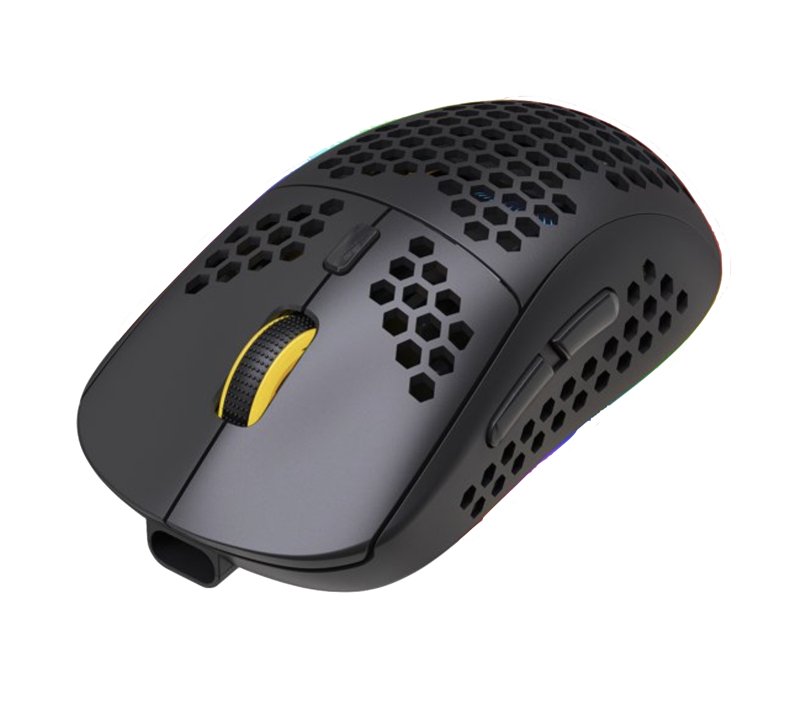
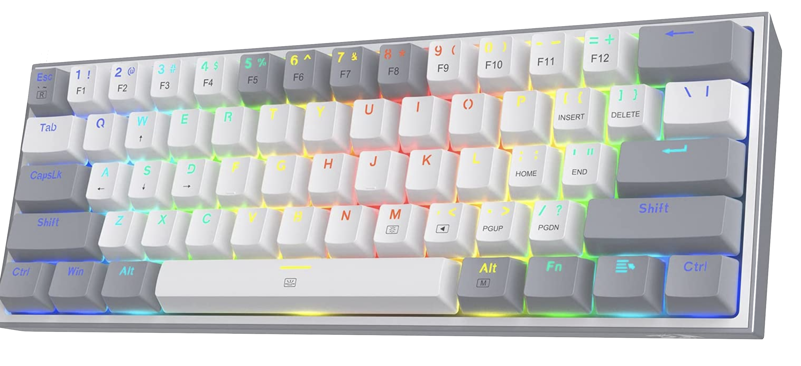
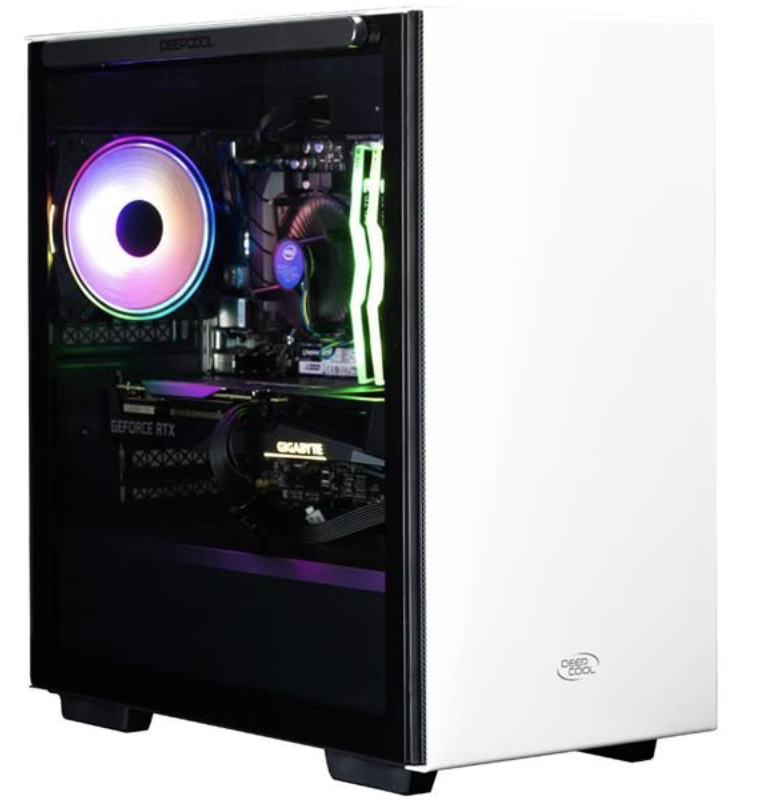
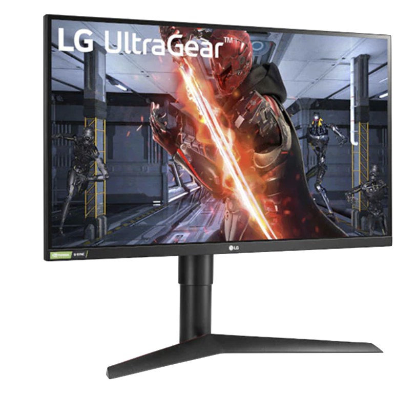

Welcome to PC Setups

Personal Computers, also known as PC's are an amazing invention that are crucial to daily life situations. Many people use PC's for working, coding, gaming and many other interesting day to day activites as well. In this blog, we will feature all the aspects of which specific PC setup is best for both price and utility. In order to judge this 2 factors, we will use 4 different accesories which are, Mice, Keyboards, Monitors, and PC's of course to get the best possible result.
Our Accesories

Mice
Mice

Keyboards
Keyboards

PC's
PC's

Monitors
Monitors